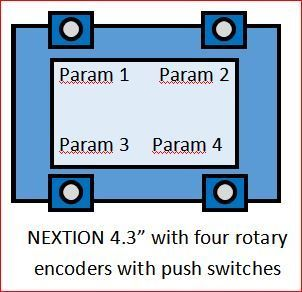

Hello, I'm working on a simple controller to go in an enclosure with the Axoloti. It's four rotary encoders with a touch screen TFT display used to show labels and values for each. The idea is that it can be flexible enough to use the Axoloti as a multi fx unit or a synth with controls - looking something like the the NSynth Super.

I've got it working with one encoder connected to a NodeMCU, which is connected to a Nextion 4.3" (which makes GUI handling very easy). The NodeMCU is passing MIDI to the Axoloti MIDI In port and the Nextion can show the current 0-127 value from the encoder. This is all programmed using Arduino IDE and the Nextion requires it's pages designed with it's editor program.
{kind=link}
I'm hoping to use the encoder switch to select other parameters and send MIDI CCs for each one as they're changed. The touch screen can do something too. Each encoder needs three GPIOs, the Nextion needs UART TX/RX and MIDI IN and OUT to the Axoloti. I'll need a multiplexer for the encoders.
Does all this sound like a good plan? The Axoloti doesn't handle anything other than sound. I also need to send MIDI from the Axoloti to the NodeMCU (or whatever I finally use) to configure the current state of the values of the CCs it's meant to control - using SysEx? Also I need to program three things when changes are made (Axo, NodeMCU, Nextion.) Any suggestions are welcome.
Thanks, Simon.
UPDATED see below